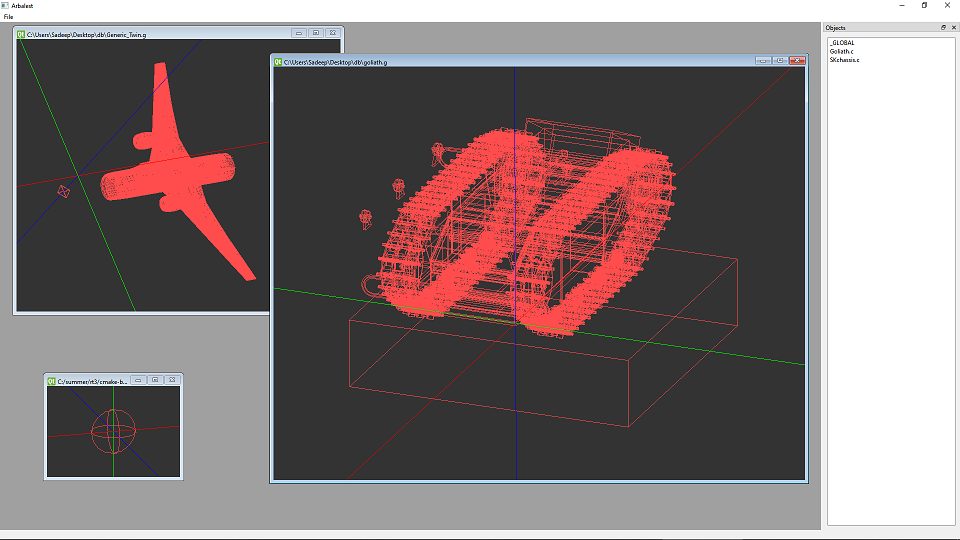
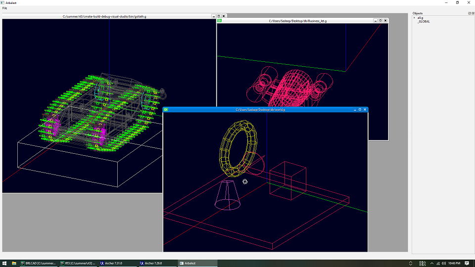
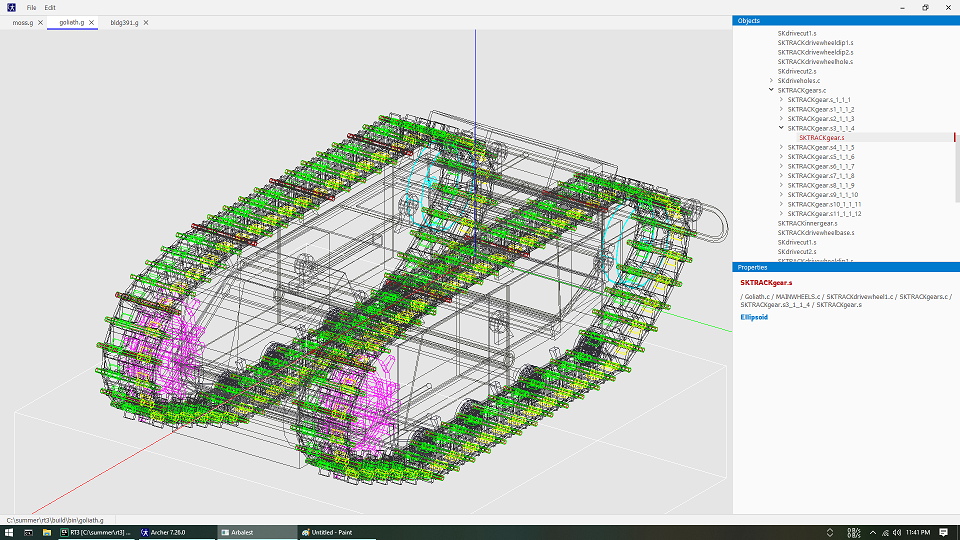
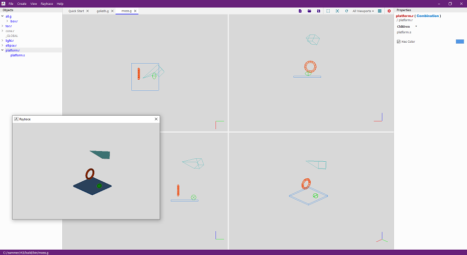

- 04 May 2020
Downloaded Qt, Visual Studio C++, cloned (or whatever it is called in svn) the BRL-CAD source code.
- 05 May 2020
Fixed the errors that came up and built BRL-CAD from source on Windows, VS2019. Several bugs still remain. A debug assertion failure happens in pix-bw.exe. But I guess this won't affect my project in any way. The builds still take a long time. I guess this is because everything is compiled everytime.
- 06 May 2020
I looked at the possibility of using NMake to build BRL-CAD for Windows because it would not take long as building with VS (CMake was lot faster when I was doing in Ubuntu last year). Also I need to configure CLion instead of VS.
CMake generates the NMake project successfully. But NMake does not work well. It gives an error when building TCL and TK projects. I was changing various stuff and tried to see if it succeeds.
- 07 May 2020
Changing CMakeLists files of tcl and tk modules and a change to corecrt_io.h in windows 10 SDK made the errors with NMake disappear. Archer does not work. Debugging Archer displays that it crashes saying tkhtml.dll not found. Also I was trying to find a bug to solve as the patch Sean asked for. Looked at https://sourceforge.net/p/brlcad/bugs/385/. Followed some Qt videos.
- 08 May 2020
I was thinking the only command line way of building using Visual Studio was via NMake. I realized that I can build via the Visual Studio IDE's native way by setting some arguments in CMake. Also realized that the build times were long when building with VS IDE was because I built ALL_BUILD when I should have built only the target I changed. Configured CLion to use VS IDE's tools to build. Everything is working now.
- 09 May 2020
Worked on the patch Sean had asked for. The Create new file in MGED had a bug. It was saving without the .g extension even though .g extension was selected in the Create New dialog box (at least on Windows). I tried to debug this. I realized this was a bug (or a unusual behavior) in Tk framework and cannot be by changing BRL-CAD code.
Then I started to create the feature to open recent files in MGED.
- 10 May 2020
Finished implementing opening recent files for MGED.
The patch can be found here. https://sourceforge.net/p/brlcad/patches/542/
- 11 May 2020
I did not do anything related to the project.
- 12 May 2020
Qt is using qmake to build by default. But can be configured to use CMake too. I encountered several issues when trying to configure building Qt applications with CMake in Windows. I fixed those issues and built a Qt based project with CMake.
- 01 June 2020
Implemented opening a BRLCAD database and saving a BRLCAD database using coreinterface.
Used QGLWidget to display geometry using the display manager I implemented last year. Traversing world with keyboard seems to be broken.
- 02 June 2020
Bug fixes relating to displaying geometry.
Created a class to store and process multiple BRLCAD databases (to support keeping multiple documents opened inside the software)
- 03 June 2020
Implemented fetching objects list from a database using BRLCAD::ConstDatabase::TopObjectIterator. Displayed the list in a QListWidget.
However this does not still display the nested objects. Added keyboard shortcuts for menu item actions.
- 04 June 2020
Disabled AUTOMOC and wrapped manually.
Replaced QGLWidget with QOpenGLWidget for displaying geometry and fixed the bugs that came up.
Readability improvements (Moved .h files to include directory. Made the CMakeList.txt file clear.)
Created the GitHub repository and pushed everything.
- 05 June 2020
Fixed bug OpenGL widget not refreshing after first drawing.
Geometry Operations (Creating sphere)
- 06 June 2020
I was struggling to get elements from the VectorList class. Iterator has a very weird syntax. After hours of googling I could finally print the values from a VectorList. Had to create a separate class just to do the iterating (VectorList::Iterate). I'm not sure if I'm doing this correctly. Can't still get the elements to a list without using something like global variables since local variables are not accessible within the class I created for iterating.
- 07-10 June 2020
Started rewriting the display manager since I anyway will need to change it to make compatible with the VectorList.
Created a camera and implemented following functionalities.
Rotating with mouse. Currently configured to rotate by dragging with middle mouse button.
Moving (perpendicular to the camera direction) with mouse. Currently configured to move by dragging with right mouse button
Moving forward /backward (camera looking direction) with mouse wheel.
Implemented making the cursor (mouse) jump to the other edge when it passes the boundary of opengl display while doing the above operations.
Implemented Grid lines.
Keyboard shortcuts for camera.
- 11 June 2020
Implemented the class Document which holds information about a single .g file opened in the editor.
Implemented support for multiple documents. Several .g files can be opened and worked with now.
Struggled to get the elements from VectorList to a list. (later found out that this was not possible and was not the intended use of VectorList)
- 12 June 2020
Worked on the DM
- 13 June 2020
Finished writing DM to coreinterfaces:VectorList.
bug fixes in coreinterface.

- 14 June 2020
Minor Bug fixes. Opening file via QFileDialog::getOpenFileName did not work when QMdiArea is in subwindow mode rather than tabbed. (For the screenshot yesterday I had to hard code file paths & open them in opening).
- 15 June 2020
Replaced the objects list with a tree view (I reused the code from rt3 / QtGui).
Studied the Cameras in g3d. It appears I will have to study the logic and implement the cameras (rather than reusing the g3d code) since they use ORGE.
- 16 June 2020
Added a style sheet through RC. UI improvements (mostly experimenting various things I can do with style sheets)
- 17 June 2020
Implemented rendering directly from bn_vlist. Now we can choose between using VectorList and bn_vlist by changing bool ArbalestSettings::useLegacyVlists.
It turned out to be significantly faster.
- 18-19 June 2020
Studied how archer, mged, libged, libtclcad, libdm and display_lists works.
I was playing around with the code by placing breakpoints in the code of these libraries while doing stuff in archer.
- 22-23 June 2020
Studied the source code.
Worked on implementing display lists in C++.
Cloning and setting up qtged branch. Tried to get qged target to build, failed.
- 24 June 2020
Display lists and managing color done. 
Removed the C like vlist rendering since BRLCAD::VectorList::Iterate is now fast enough with Display lists implemented.
Worked on object insert toolbar.
- 25-26 June 2020
Implemented line styling (setLineAttr in dm and deciding style for each solid). Dashed lines are plotted where necessary now.
Ported my DM to the qged project in the main repo. Most of the things had to be changed since my implementation was on top of coreinterfaces and the main repo didn't have access to coreinterfaces. So I rewrote it to rely on the C methods.
- 28-29 June 2020
Restructured the code (which is now in main BRLCADrepository / qged) to seperate the raw OpenGL commands to a new DisplayManager class which is analogous dms in libdm. The plan is to implement methods in dm-generic.c in this class as needed.
- 30 June 2020
Fixed the bug which prevented the wireframes from not being drawn in starseeker's machine. After a lot of searching I realized that doing OpenGL operations in Qt SLOT call cause the bug.
Installed Ubuntu, configured the environment and built BRLCAD+my project on a virtual machine. (this was done to simulate starseeker's environment although it would help me in the future to check cross platform support)
- 1 July 2020
Changed my project code in the RT^3 repository to account for to reimplement the changed made to the code in qged. (see 28-29 June 2020)
- 2-3 July 2020
Implemented traversing the database. Basically a C++ wrapper for db_walk_tree. A class TreeLeaf was implemented to support the functionality. The feature was implemented to coreinterfaces. A WalkTree() method was implemented in ConstDatabase.
https://sourceforge.net/p/brlcad/patches/546/
Implemented methods into GeometryRenderer to utilize the functions I implemented in coreinterface for drawing the database.
- 4-6 July 2020
I realized the coreinterface already had a way to support iterating the database. Discarded the code I implemented and studied the existing methods.
Implemented methods into GeometryRenderer to utilize the existing functions for drawing the database.
- 7-9 July 2020
Removed all references to internal C pointers from the codebase.
Changed all occurrences of auto keywords to the corresponding type.
Implemented destructers and properly freeing of memory in all necessary the classes (I had not done this earlier).
Converted pointers to references where possible for readability.
Implemented the concept Active document, object tree updates when active document changes. Bug fixes at file open.
Seperated UI files in the project structure for readability. Switched to manual UIC from AUTO_UIC.
Added and customized stylesheet. Removed titlebar. Added archer icon into the menubar (now title bar).
Implemented close button into menubar (with on hover/press UI changes)
It looks with the title bar removed. But Now I can't resize / drag the window at least on Windows.
- 10-16 July 2020
Added minimize, maximize, restore buttons (UI changes based on hover / press state, functionality implementing).
Replaced MDI with a tabbed interface.
Implemented method setBGColor into DisplayManager.
Replaced brlcad/vmath.h with QMatrix4x4 and QVector3D.
Created a preprocessor for QSS to support variables. Color scheme mapping is stored in a seperate *.theme file now.
Seperated logic for dock widgets into a new class 'Dockable'.
Implemented changes to object tree to support properties displaying.
File open/close UI changes.
Created Properties widget.
Made the UI compatible for multiple screen resolutions and scale levels.
Opening files by passing path.
Scroll related bug fixes in Dockable.
Scrollbars styles to look better and be more space efficient
Implemented CollapsibleWidget
A lot of experimenting in the Stylesheet for everything in the list above.
Learning about fonts and using them in Qt.

- 17-25 July 2020
(Commit https://github.com/sadeepdarshana/arbalest/commit/16ec7e464352c13401f2fbe157d4e6b13bdd95e0 to https://github.com/sadeepdarshana/arbalest/commit/cd19105679dc9a6db103e0ca725d2638e58aec89)
Implemented CollapsibleWidget. Dockable scroll / clear improvements. Properties widget reads objects details now
TypeSpecificProperties
Improving memory releasing, widget tree managing and default sizes in Dockable
CollapsibleWidget, Properties, Dockable improvements
QTableWidget experiments for displaying vectors
creating a table widget since build in is bad.
Object data tables
Display property values and editing them
Editing parameters with handlers (DragEditLineEdit)
axes in the bottom right corner now
- 28 July-7 August 2020
Removed menubar and statusbar from .ui and added it to the C++ code.
Merge pull requests. (removed some non standard code)
Bug fixes in camera.
Removed the main view from .ui file. Removed the use of .ui files and removed UIC from cmake. Everything is in C++ now.
Bug fixes in DragEditLineEdit
Document file path related implementations. Save as feature.
Implemented ObjectTree.
Changed ObjectTreeWidget to utilize ObjectTree.
Changed the logic for object rendering to utilize ObjectaTree.
added color to new ObjectTree based rendering system
- 8 - 19 August 2020
Center view around a single object.
Properties panel for Combinations.
Raytracing.
Multiple viewports for a single document.
Designed an icon for Arbalest in Illustrator.
Added toolbar icons.
Added missing tooltips for buttons.
About window.
Implemented Help window as a quick start page displayed when app starts.
Grid renderer
Implemented dark theme.
Did some performance evaluation by measuring execution times and changes some stuff based on the results.
Implemented object creation.
Implemented changing background color of raytraced outputs.
